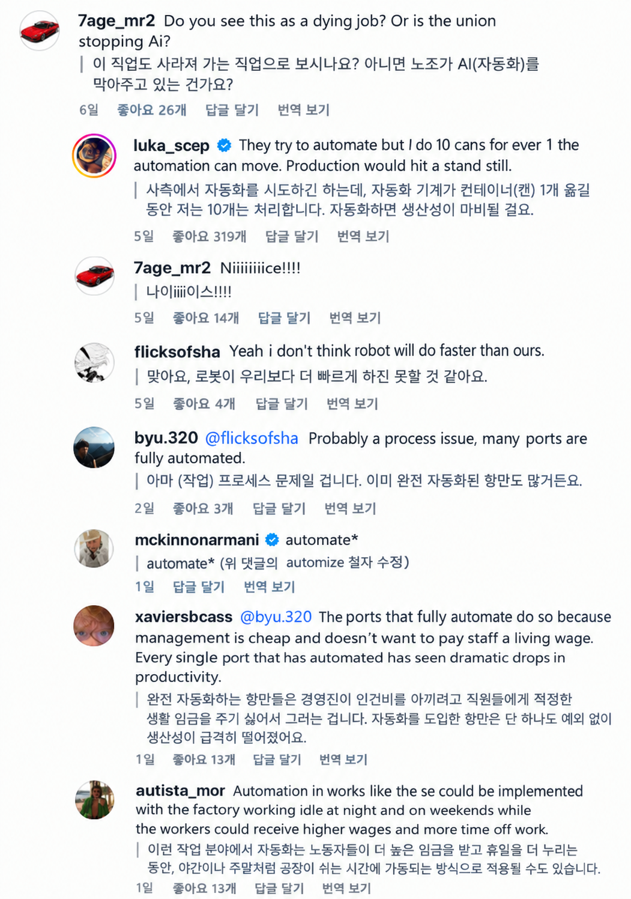

원래 자동화 처음하면 가동률 박살나긴 함
데이터 쌓이고 변수 어디까지 봐야하는지 나오면 안정화되면서 인간 추월하는건 금방임
저거보다 더 심각한건 물류 옮기는 배조차 AI 적용시도중임 ㅋㅋㅋㅋ
시물레이션 이빠이 돌려서 운항 오차 최대한 줄이고 자동화 하랴는거 같더라
근데 고작 지게차 하는걸 대체 못하겠냐고
거의 모든 직종이 ai 대체 가능한데 그냥 저것도 ai에 면역이라는 판타지지
순서와 시간의 차이고 그 시간조차 점점 빨라짐
예전에 용접은 뭐 ai가 안되지 하더만 바로 로봇용접공 나오잖아
일단 되기만 하면 무한하게 개선이 진행되서 정신차려보면 사람보다 배로 빨라져있을거임.
지금 1/10이면 5년뒤면 ai가 10/1로 역전할듯
자동화 쉬울 것 같으면서도 안되는 이유
저런 대형장비는 자연이라는 변인 통제가 안됨.. 수치로 딱딱 하는 것 같지만 수치는 실시간으로 흔들리고 결국 사람의 감으로 하고 있을 때가 많음
3년만있어봐라 ㅋㅋㅋ
모든 직종이 대체가 되는건 맞는데 저게 사무직보다 늦게 대체된다에 한표 던짐
그건 센서와 데이터 학습으로 커버되고있음
학습을위한 데이터를 생산하고 학습시키면됨
근데 전단계를안해서 안되는거지 AGI니머니 염병을떠는시대에 사람의 감 운운하다니
기계의감이 더 정확함
그 감이라는게 ai가 제일 잘하는거잖아
드론 비행이 왜 쉬워졌는지 모름? 애초에 드론도 실내에서 무풍일때나 쉬웠지, 밖에 나가면 바람때문에 자세 유지하는것도 힘들었음. 이젠 일반인도 조작가능할정도로 알아서 자세보정하잖슴.
그 보정의 난이도가 다름
저런 정밀작업에서 수치자체가 불투명한데
대체야 되겠지만 사무직 대체가 더 빠름
그림쟁이 코더 이런애들은 변인통제가 쉬우니 빠르게 대체되는거고 저것도 육체노동 현장직에 가까움
변인통제 이유 보다는 데이터 양의 차이가 좀 더 정확할거 같음
코딩이나 그림은 말그대로 때려부을 데이터가 많은데 현장직은 때려부을 데이터 자체가 없었으니까...
짱들은 이미 길바닥 호떡파는 아줌마도 vr기계같은거 차고 자기 업종프로세스 데이터화해서 판매하던데 현장직도 금장 대체될듯 싶다
자동화가 안된다 하는 애들은 그냥
자동화를 위한 세팅이 덜갖춰진 환경인것임
판깔아주면 바로실직할걸
솔직히 더 발전하면 바로 사라질듯
길어도 10년
뭔가 기여웡..
저런게 가장 자동화하기 쉬운분아님?
안전위해 인터락 달고 바람에 흔들리는 변수 같은거 조절하기 개쉬워보이는데
속도 문제는 결국 안전 무시하고 후딱후딱 처리하는거 때문일텐데
프로그램도 안전 개무시하게 끔 역치를 조절하면 충분히 빠르게 쌉가능일듯
1년 본다
작업할때의 속도가 문제가 아님 기계는 24시간 365일 복지없이 돌릴수있다는걸 생각해야지
제품을 생산하는 공장이면 그말이 맞는데, 항만은 케이스가 다름
야드는 수시로 외부트럭 들어오니까 자동화를 해야할 명분도 있고 이미 자동화도 됐지만 안벽크레인은 배가 없으면 기계고 나발이고 그냥 놀수밖에 없음.
생산성을 올리는데 한계가 있는데 그러면 사람이 조작하는것보다 압도적으로 빠른가 하면 그것도 아님
우리업종은 대기업도 관심없고 자동화 만들만큼 돈도 안되서 늦게 없어질거같긴함...